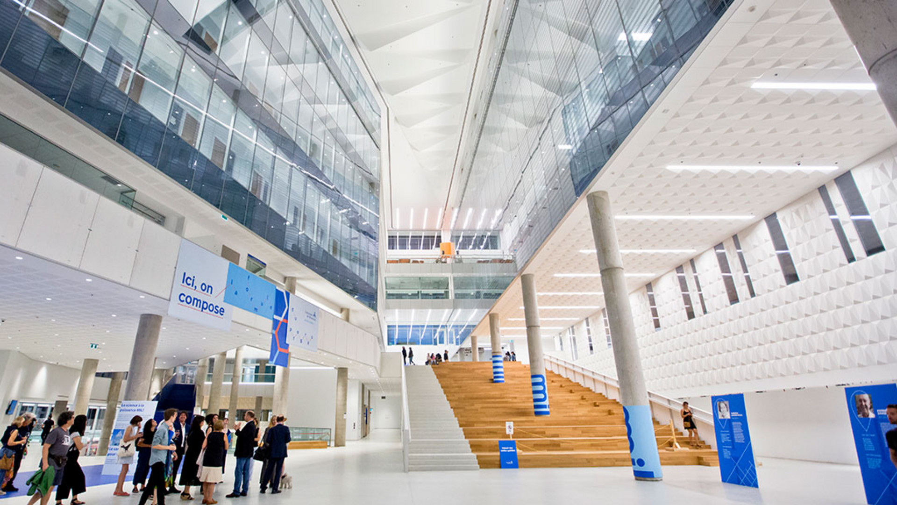
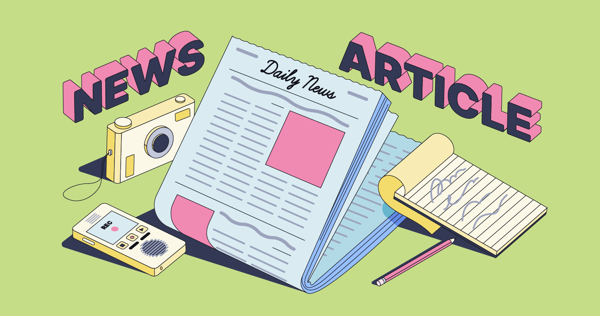
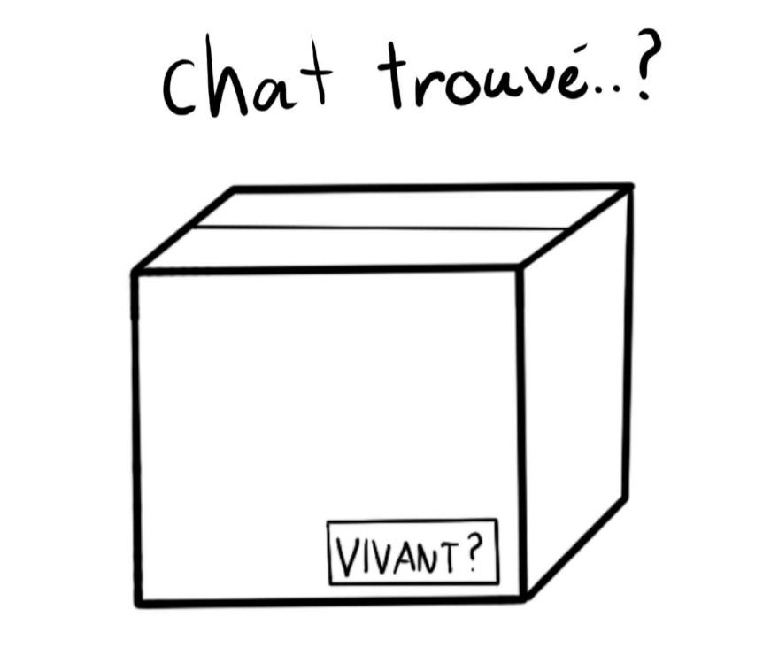

Les Évènements de La PHYSUM
Les événements de la PHYSUM offrent tout au long de l'année une variété d'activités sociales, artistiques et compétitives pour rassembler les étudiant.es en physique et célébrer leur engagement.
Articles
La passerelle du Mil : un réseau de diffraction acoustique ; par Mathieu et Paul-Édouard
Histoires
Enquête : des événements surnaturels surprenants survenus au campus MIL ; par Émile

Ressources
Voir les ressources par les membres de l'Électron libre.

Mais qui est ce personnage ?
par L'ÉLECTRON LIBRE
Les lecteurs attentifs de la version précédente auront peut-être remarqué la présence d’un certain personnage présent un peu partout en différentes formes. C’est Gaston le muon grognon ! Ses origines datent d’un devoir de relativité où l’on devait calculer des temps de vie de particules. L’un de nos collègues s’amusa à dessiner de petits personnages sur son travail et nous tombâmes alors sous le charme de Gaston. Lorsqu’il fut temps de créer une nouvelle image au journal, nous avons eu une rencontre avec ce muon distingué et nous sommes arrivés à une entente où il nous donna le droit à son image. Il nous permet de rajouter un peu de couleur et de vivacité au journal et grâce à lui, nous pouvons imprégner une certaine touche artistique.
Les petites annonces
Bonjour je croyais avoir perdu mon chat il y a quelques jours, mais plus le temps avance plus je pense qu'il serait dans cette boîte. Par contre, cette boîte contenait un mécanisme qui avait 50% chance d'activer un dangereux poison. Si vous vous demandez pourquoi j'avais cette boîte, ne me blâmez pas, c'était un cadeau de mariage. Mais bon, que devrais-je faire?
Envie d'un bon café et à bon prix? Venez au café La Planck! De bons cafés à 25¢ vous attendent.
NE MANQUEZ PAS LE TOUT NOUVEAU ETHER-O-MÈTRE 3000
Avec des bras de plus de 100KM DE LONG, soyez certain de
trouver la vitesse relative de l'éther !!
Saviez-vous que ?
Si vous êtes au baccalauréat en physique, vous pouvez gratuitement devenir membre de l'association canadienne des physiciens et physiciennes (CAP). Ce faisant, vous pourrez participez à des conférences sur tous les sujets, recevoir les infolettres sur la physique au Canada. Pour plus d'information, visitez la page officielle de CAP:
https://www.cap.ca/fr/ . On y trouve beaucoup d'information sur les possibilités d'emplois, ce que représente la profession, etc.
Il existe aussi l'équivalent américain, l'American Physical Society (APS), qui permet aussi de vous tenir à jour sur la physique dans le monde. L'adhésion est, encore une fois, gratuite. C'est pourquoi nous vous conseillons de devenir membre, vous n'avez rien à perdre ! Visitez leur site officiel pour plus d'informations:
https://www.aps.org
Pour des informations plus spécifiques sur la physique à l'Université de Montréal, consultez l'onglet Ressources.